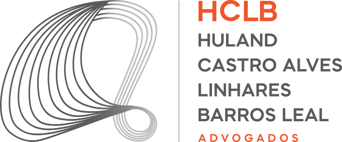

HCLB Advogados • Desenvolvedor de IA & AutomaçãoAutomação de Diários da Justiça & Cruzamento ERP
Todo dia o escritório precisa saber quais publicações do DJEN (Diário de Justiça Eletrônico Nacional) envolvem processos que não estão no ERP ou que o ERP não captou. Essa conferência era feita à mão, processo por processo. Com apoio de IA, construí um workflow no n8n que faz o cruzamento sozinho e entrega à equipe só o que precisa de atenção.
Uma conferência manual, processo por processo
As publicações chegavam em um documento Word. Uma pessoa copiava o número de cada processo, buscava no ERP e anotava duas coisas: se o processo estava cadastrado e se aquela publicação tinha sido captada pelo sistema. Depois passava para o próximo, até o fim da lista.
O tempo gasto crescia junto com o volume de publicações e dependia de atenção total: um número copiado errado ou uma linha pulada significava uma publicação sem tratamento, com risco de prazo perdido.
Anexo A: a rotina manual
Um workflow que confere tudo antes do expediente
Todo dia às 05:00 o fluxo atualiza a base de processos do ERP no Supabase, consulta as publicações direto na API do DJEN, cruza com as publicações que o ERP captou e confere o resultado contra a base completa. Processos baixados, migrados e duplicados saem da lista.
A equipe recebe um único e-mail com a planilha do que precisa de atenção. As entradas que vêm de fora do n8n têm nova tentativa a cada 20 minutos e, se o prazo estourar, a equipe é avisada no WhatsApp em vez de o fluxo falhar em silêncio.
Anexo B: o workflow
Clique em qualquer bloco do diagrama para ver o que ele faz.
Comece clicando em um bloco
Cada seção do diagrama corresponde a um trecho real do workflow. Clique para ver o que ele faz.
O que faz o fluxo ser confiável
Nova tentativa a cada 20 minutos
Os e-mails do ERP não têm horário garantido. O fluxo checa de novo a cada 20 min até um horário-limite e, se estourar, avisa a equipe por WhatsApp em vez de falhar calado.
Calendário embutido
Na segunda-feira o fluxo busca as publicações de sexta. No fim de semana atualiza a base, mas não cruza publicações, porque não há publicação nova.
Relatório só com o que importa
Processos com status "Baixado" ou "Migrado" e linhas duplicadas saem antes do envio. A planilha final traz só o que alguém precisa olhar.
IA na construção e na demonstração
Desenhar o cruzamento
Usei o Claude para transformar a rotina manual em regras: como casar o número do processo entre DJEN e ERP, o que conta como "não captado" e quais casos tirar do relatório.
Construir e revisar
A IA ajudou a escrever e revisar os nós de código em JavaScript: retentativa com prazo, regra de segunda-feira e filtros de status. A arquitetura e a validação com a equipe ficaram comigo.
Mostrar sem expor dados
A partir do export do workflow, sem credenciais nem parâmetros, gerei com o Claude uma réplica interativa com dados fictícios e 5 cenários. Ela mostra o fluxo funcionando sem abrir nenhum dado do escritório.
Anexo C: o fluxo em execução (dados fictícios)